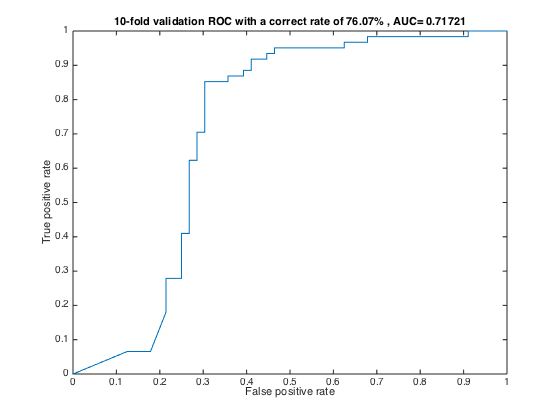

Contents
load and initialize the vars
load KFoldResult_7607_2000_sim_40node; correctRate=76.07; %T_sim is the simulation result from the nerual network T_sim=classResult(2,:); validation_set_output=classResult(3,:);
output to class correct rate to txt for statistics
fid = fopen('b.txt','w'); for i=1:size(cps,2) fprintf(fid,'%g\n',cps{1,i}.CorrectRate); end fclose(fid);
Get the 10-fold validation result
c1=cell(1,size(T_sim,2)); c2=cell(1,size(T_sim,2)); for index=1:size(T_sim,2) classOutput=T_sim{1,index}; label=validation_set_output{1,index}; tempIndex=(label(1,:)==0.9); classTarget=cell(1,size(label,2)); classTarget(1,tempIndex)=cellstr('melanoma'); classTarget(1,~tempIndex)=cellstr('other'); c1{index}=classTarget; c2{index}=classOutput(1,:); % bad polyfit for the roc,forget this % [y1,~,mu]=polyfit(X,Y,4); % X1=0:0.01:1; % Y1=polyval(y1,X1,[],mu); % plot(X,Y,'o--',X1,Y1,'g--'); % return; % plot(X,Y,'o--'); % while size(X,1)<13 % % disp(X); % for j=1:size(X,1) % if(X(j,1)<X(j+1,1)) % % end % end % end % newY=interp1(X,Y,newX,'spline'); end
plot the ROC curve
[X,Y,T,AUC,OPTROCPT,SUBY,SUBYNAMES] = perfcurve(c1,c2,'melanoma'); plot(X(:,1),Y(:,1)); stderror=std(Y(:,1)); % errorbar(X(:,1),Y(:,1),Y(:,1)-Y(:,2),Y(:,3)-Y(:,1),'rx'); % errorbar(X(:,1),Y(:,1),ones(size(Y,1),1)*stderror,ones(size(Y,1),1)*stderror,'rx'); xlabel('False positive rate'); ylabel('True positive rate'); title([sprintf('%d-fold validation ROC with a correct rate of %.2f%c , AUC= ',index,correctRate,'%'), num2str(AUC(1,1))]);